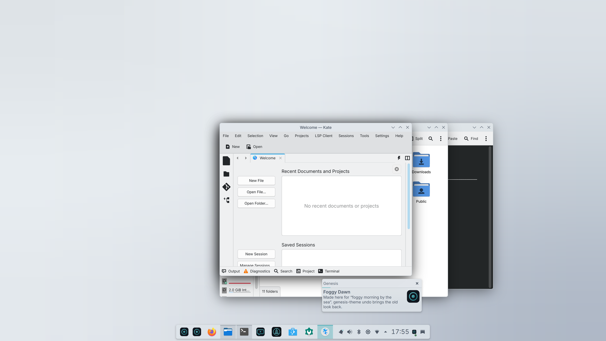
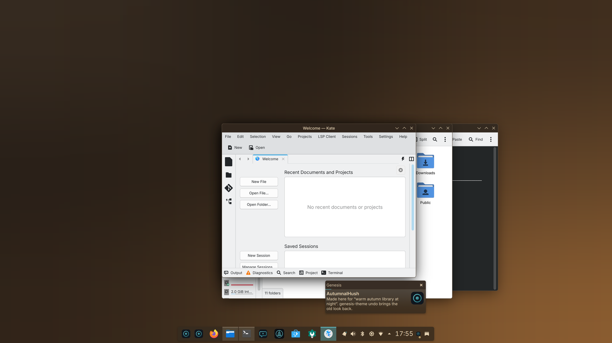

A Linux desktop · Fedora bootc · KDE Plasma
A complete computer, and a model that lives on it. Say what you want and it makes it. Ask what went wrong and it tells you. Describe a look and the whole desktop follows. Nothing leaves the machine.
Loading the latest release…
Looks
The model on the machine proposes a palette; Genesis turns it into a colour scheme for every application, the terminal and a wallpaper, checks that text reads, and applies it together. Undo is one word. Both of these were made on a laptop this afternoon.



Make
"A checklist app that saves to a file." "A pomodoro timer with a bell." "Rename the photos in this folder by the date they were taken." Every step shows as it happens, the thing runs in a preview, and Install as app puts it in your menu. This one was built by the smallest model on a fresh machine.
Before anything outside the project, a card with a plain verb: Genesis wants to install a package. Allow once, or not now. Every job is snapshotted first, so Undo takes the whole thing back.
Ask
The same model that makes things reads the machine. Not a chatbot bolted on the side — a thing with the journal, the package database and the hardware in front of it.
One notification, one button. The program, the signal and the stack go to the model here, which reads the journal around that moment and answers in plain words. A crash dump carries the paths a program had open — exactly why it never leaves.
Ten times more common than a crash, and just as opaque without this. Same offer, same door.
Not "44.20260922.1". Genesis reads the two images on the disk — the one running and the one waiting — and lists the kernel, graphics, audio, what was added, and what in Genesis changed, with the sentences those changes shipped with.
Meta+Shift+A: an error, a chart, a form — asked about with a vision model on this machine. Select text and right-click for the same.
Meta+Shift+V listens. Share text starting with "ask" from the phone and the answer comes back as a notification. Anything that would install, delete or send is shown first and needs Enter.
Unplug a laptop and the big models are put away; every question goes to the small one, and the assistant gets shorter rather than quiet. Plug in, and they're back. Only a desktop that owns both the model and the machine can do this.

Measured
First run generates a few tokens on every device the machine offers — the CPU, each GPU — and keeps what was actually fastest. On the first real laptop that was the processor, not the built-in graphics, by three to one. Then it offers the biggest model pack that fits, from 2 GB for an old laptop to 48 GB for a workstation GPU, and the assistant starts the moment the first model is on disk.
Kept
Genesis is an image, not a pile of packages. Updates are fetched in the background and applied when you restart — never on their own — and the image you were on stays as the rollback, every time.
Every night a machine installed a week ago is upgraded to the new image, rebooted, and checked: does it boot, does it set itself up, does the assistant answer? A build that fails never reaches you.
That's the whole procedure. Nothing to reinstall.
Not a store with forty thousand. One answer per need, one word to install — genesis-apps install obsidian — and the assistant reads the same list. Apps install for you; the image underneath is never touched.
Every image carries a cosign signature; every model pack definition is signed and every download is checked against it.
What leaves the machine
The models run here. The crash you ask about, the screen you draw a box on, the files you opt in — none of it is uploaded, because there is nowhere for it to go. Genesis makes three kinds of connection on its own, and that's the list:
Some things it never does whatever you answer: read your keys and passwords, wipe disks, change the base system. Refused by rules, not by the model's judgement.
Honest
Everything above was run on a real machine before it was written here, and the things that failed when it was — and there were several, today — are in the decision log with what was done. What has not happened yet is the second machine, and NVIDIA, AMD and Intel Arc have never been tried. If you have one, you'd be the first, and the hardware report is one command.
Download
Alpha. Try it in a virtual machine first; install it on a machine you can afford to experiment with. Read your first hour before you do — it tells you the moments that look wrong and aren't.
Downloads are split into parts because of GitHub's 2 GB limit. Join them:
cat genesis-VERSION.qcow2.zst.*.part | zstd -d -o disk.qcow2 cat genesis-VERSION.iso.*.part > genesis.iso
One thing to expect while installing: the step called "Deployment starting" takes 10 to 30 minutes with a progress bar that does not move. It is writing about 13 GB to your disk and it is not stuck. Ctrl+Alt+F3 for a shell where top shows the copy running; Ctrl+Alt+F6 goes back.
The joined ISO is about 6.3 GB, so a USB stick of 8 GB or more is needed. Write it with Fedora Media Writer, or sudo dd if=genesis.iso of=/dev/sdX bs=4M status=progress oflag=sync — the whole stick is overwritten. Nothing is downloaded during the install: the ISO carries the whole system, so the machine can be offline until the first boot.
sudo bootc switch ghcr.io/matijagorsek/genesis:stable-nvidia and restart. Untested on real hardware so far.genesis-report --send, or open a "Hardware report" issue.Source, images and the decision log: github.com/matijagorsek/genesis. Genesis is a Fedora Remix and is not endorsed by the Fedora Project.
Alpha. The prebuilt qcow2 disks are for trying Genesis in a virtual machine: they carry a known account, genesis / genesis, so the boot tests and the weekly evaluation can drive them. That password is only accepted from inside a virtual machine's own network (QEMU, UTM and libvirt NAT); a bridged test disk on a real network refuses it. The installer ISO has no account at all — it asks you to make one, and Genesis asks again on the console if the installer did not.